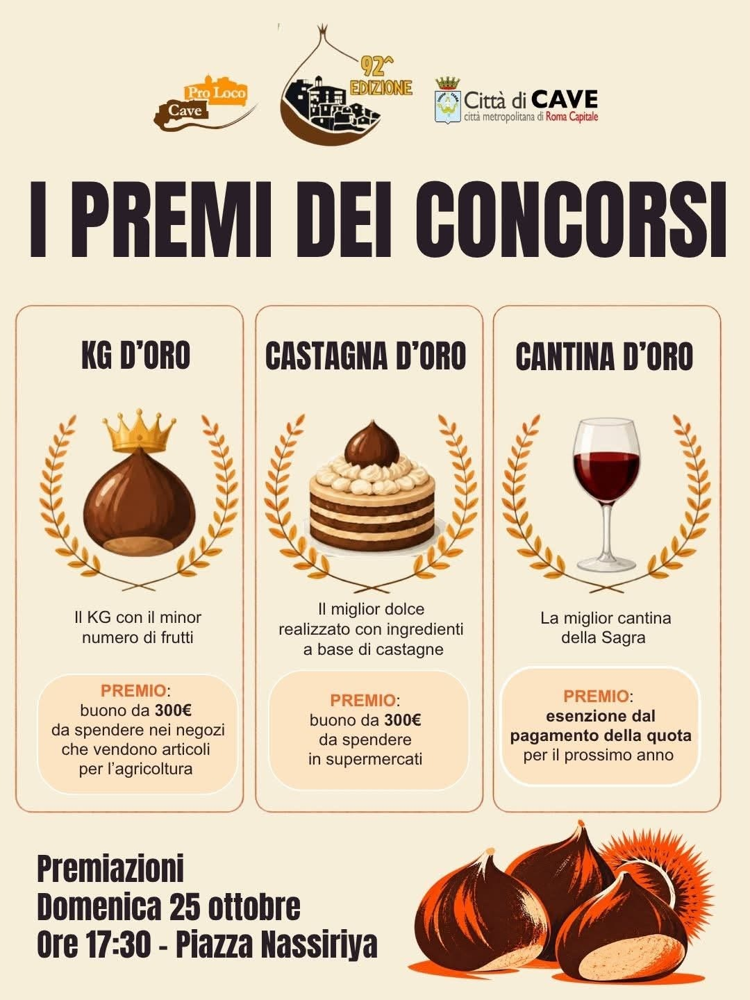

CAVE – I colori caldi delle foglie che cadono, il profumo avvolgente delle caldarroste che si diffonde tra i vicoli del centro storico e quell'inimitabile atmosfera di festa che riscalda le giornate autunnali: Cave si appresta a vivere uno dei momenti più attesi dell'anno. La celebre Sagra della Castagna, organizzata con passione dalla Pro Loco di Cave insieme al Comune e alla Città Metropolitana di Roma Capitale, raggiunge quest'anno lo straordinario traguardo della sua 92ª edizione. Un anniversario importante per una manifestazione che continua a rinnovarsi nel segno della tradizione, celebrando l'eccellenza enogastronomica del territorio e lo spirito di comunità che da sempre la contraddistingue.
Il vero cuore pulsante dell'evento, come da tradizione, sarà rappresentato dai tanto attesi concorsi che mettono in palio prestigiosi premi per valorizzare l'impegno, la creatività e la passione dei partecipanti. Tra le sfide più sentite spicca il Kg d’Oro, il premio dedicato ai produttori locali che incoronerà la maestria agricola premiando il chilogrammo di castagne composto dal minor numero di frutti. Una vera e propria gara d'eccellenza per scovare i frutti più maestosi e pregiati del raccolto stagionale, con un ricchissimo buono da 300 euro destinato all'acquisto di articoli per l'agricoltura.
Per chi invece ama mettersi alla prova tra i fornelli, la sfida si sposta sul terreno del gusto con la Castagna d’Oro, il concorso culinario che premierà il miglior dolce a base di castagne. Un'occasione unica per trasformare questo frutto versatile in un'opera d'arte della pasticceria, sapientemente giudicata per originalità e sapore, con in palio un utile buono spesa da 300 euro da utilizzare nei supermercati. Non manca poi un omaggio speciale all'accoglienza e al convivio con la Cantina d’Oro, l'ambito riconoscimento che incoronerà la miglior cantina della festa, regalando al vincitore l'esenzione completa dalla quota di partecipazione per la prossima edizione della sagra.
Tutti i riflettori sono puntati sul momento clou della manifestazione: la grande cerimonia di premiazione si terrà Domenica 25 ottobre alle ore 17:30 nella cornice di Piazza Nassiriya. Un appuntamento imperdibile per scoprire i vincitori dei concorsi, festeggiare insieme le eccellenze locali e lasciarsi conquistare ancora una volta dal fascino senza tempo della castagna di Cave.